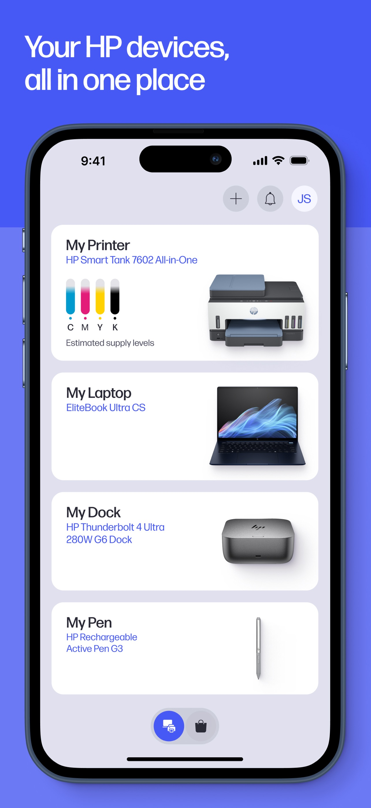
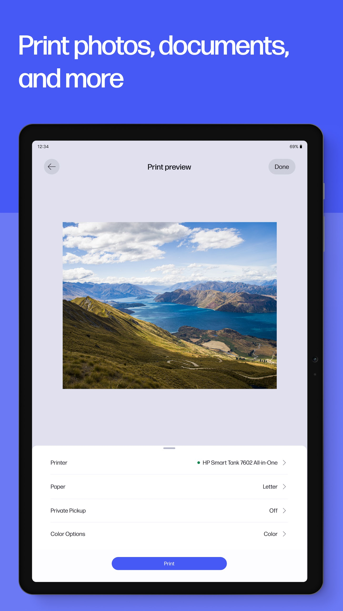

HP Smart 打印应用快问快答
应用商店里搜 HP Smart 和 HP 到底是什么关系？远程打印怎么让文件到人了才出纸？快捷方式和 Printables 素材库值不值得用？一份面向惠普打印机用户的速查表。
整理一篇关于 HP Smart 的快问快答，覆盖惠普打印机用户最常问的几个问题。
HP Smart 和商店里搜出来的 HP 是同一款吗？
结论：是同一款应用，惠普在逐步把 HP Smart 更名为 HP 应用。2024 年起惠普宣布 HP Smart 与面向惠普电脑的 myHP 整合为新的 HP 应用，iOS App Store 和 Google Play 上的原 HP Smart 条目已经陆续改叫 HP，Mac 商店条目名为「HP: Print and Support」。Windows 用户在微软商店里仍能搜到 HP Smart，两款旧名都可以下载使用，但新功能会优先进入新的 HP 应用。如果你手机上显示的名字是 HP，把它当成 HP Smart 的新版本就行，不用重装、不用重新配网，hp smart官网上也有完整的版本迁移说明。

装了它能做什么？
三件核心事：打印、扫描、远程打印，外加一堆便利功能。打印可以在手机和平板上直接设参数（份数、黑白还是彩色、单面还是双面），预览完再出纸；扫描功能把纸质文档扫成 PDF 或图片，直接发邮箱或存云盘；远程打印是亮点——人在外面发任务，到家了让打印机出纸。便利功能包括一键快捷方式、Printables 免费素材库、墨量监控和耗材提醒。惠普新的 HP 应用还把电池管理、摄像头控制、键盘快捷键等惠普电脑的硬件管理也整合进来了，如果你的笔记本也是惠普的，这一项尤其有价值。
怎么装？各平台有什么注意事项？
按平台分：
- Windows：微软商店搜 HP Smart 或 HP 应用，前者适合只要打印扫描的用户，后者适合想要笔记本一体管理的。两款都免费，体积数百 MB，按需二选一，不必同时装。Windows 10 1809 及以上版本正常维护。
- 安卓：Google Play 搜 HP，新旧版本的包名不同，直接更新即可，不会出现两个应用打架。
- iOS：新版 HP 应用要求 iOS 17 或更高，老设备停在旧系统的只能用能装的最后一个版本。
- Mac：Mac App Store 搜「HP: Print and Support」。
改名不影响已连接的打印机，更新应用后不需要重新配网。
远程打印的「Private Pickup 到场出纸」到底是啥？
这是解决远程打印最大尴尬的功能：文件先挂起，你走到打印机旁边确认后，纸才出来。场景是这样的——你在公司往家里打印机发了工资单，人还在路上，要是没有这个功能，工资单就躺在出纸口等家里任何人先"审阅"；开了 Private Pickup，任务先挂起，到家打开应用或在打印机上确认一下，出纸才开始。
它的细节：不是全局限流开关，而是对每一个打印任务单独开启——日常文件照常直打，敏感文件才开。入口在打印预览的参数列表里，平板端和电脑端都能找到，默认关闭。需要登录惠普账号走云通道才能用，纯局域网直打的任务没有这层挂起机制。很老的机型固件不支持，参数列表里根本看不到这一项——遇到功能找不到的情况可以翻hp smart文档确认机型兼容性。
一键快捷方式怎么用？
把一整套重复动作录成一个磁贴，以后点一下就跑完全程。一个快捷方式可以组合的任务类型包括：打印（预设份数、颜色、单双面）、扫描（预设目的地）、电子邮件（扫完自动发给固定收件人）、保存到云端。比如每周一要打孩子的数学作业单，就可以建一个"作业单灰度单面"的磁贴；每周五要扫一周的报销票据发邮箱，建一个"票据扫描发邮箱"的磁贴。
创建步骤很简单：首页找到快捷方式磁贴（看不到就在"个性化磁贴"里打开），点创建，逐项定参数，命名保存就行。快捷方式跟随惠普账号同步，换手机后登录同账号就能找回。跨设备的同步依赖账号，不是纯本地配置。

Printables 免费素材库有啥用？
这是惠普在应用里内置的一个免费内容库，入口在首页推荐区的 Printables 卡片。库里有节日贺卡、涂色页、教育练习单、手工模板四个大类——涂色页是幼儿园到小学年龄段孩子的刚需，练习单是假期鸡娃的打印量担当，手工模板是周末亲子活动的现成方案。素材按需打印就行，别一次囤一堆，纸和墨都是钱，孩子兴趣来得快去得也快。
有两个边界要注意：一是素材库内容仅供个人使用，打印出来拿去卖或批量发给机构超出授权范围；二是素材库内容按地区和版本可能不同，打不开时更新应用到最新版试试。
用起来有什么坑或注意事项？
几个常见的：
- 新旧应用不要同时装，选一个用就行，功能上不冲突但界面会有差异。
- Private Pickup 需要惠普账号和云通道，纯局域网直打用不了，老固件机型也没有这功能。
- Printables 素材库地区差异明显，国内用户有时会遇到部分内容加载不出来，更新应用通常能解决。
- 扫描功能的分辨率和格式要在参数里设好，默认设置可能满足不了高质量扫描需求。
值不值得长期用？
如果你家里有惠普打印机，值得装，而且是必装。它不是那种凑数的官方配套——远程打印的 Private Pickup 解决了真实痛点，一键快捷方式对高频打印任务省时间，Printables 素材库对有孩子的家庭是消耗打印机的好去处。新的 HP 应用把笔记本硬件管理也整合进来了，惠普电脑用户还能多一份价值。唯一的门槛是版本迁移带来的名字混乱，但适应一下就好。补充一句，这些使用说明在三个仓库都能找到备份，主源在GitHub，Gitee和GitCode各存一份方便国内访问。